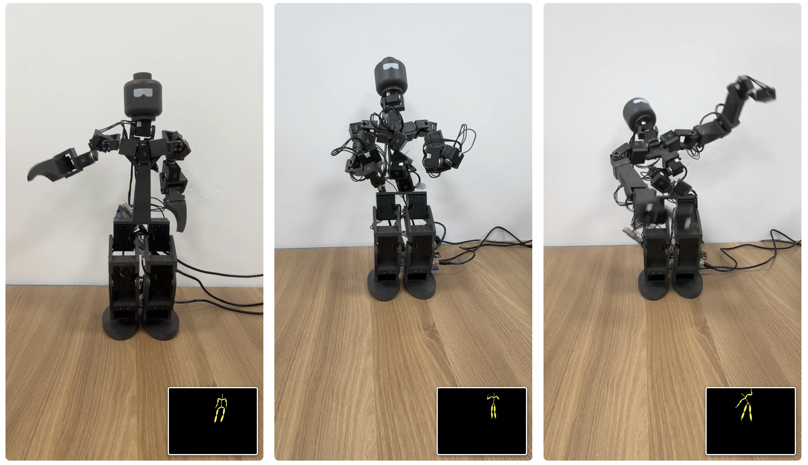
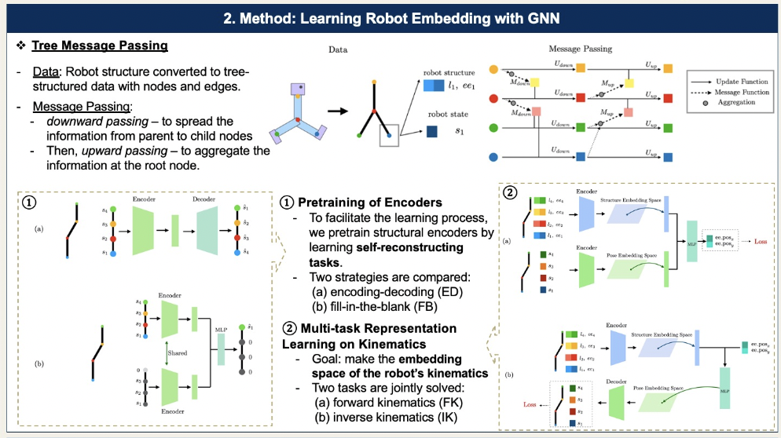
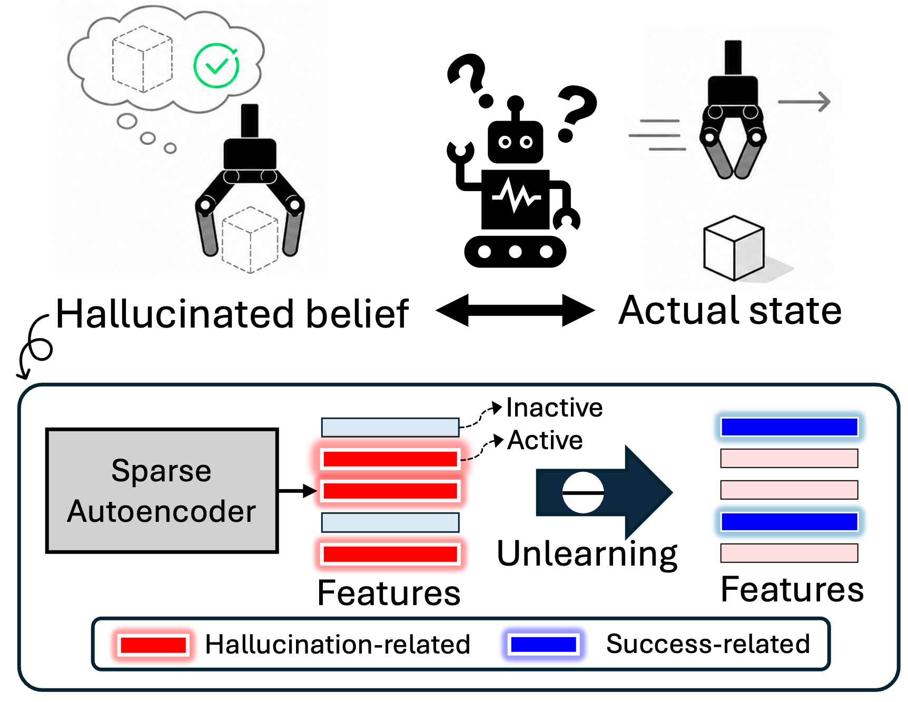
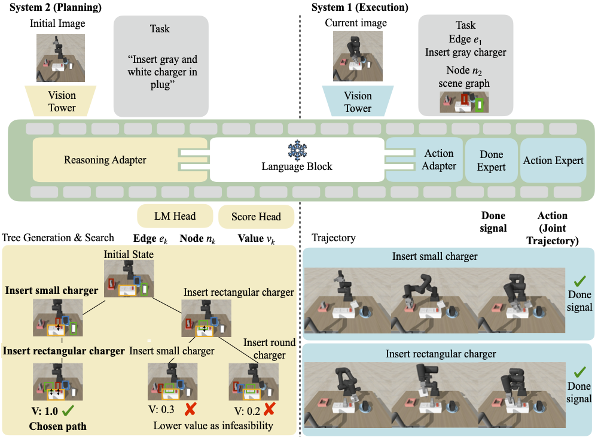
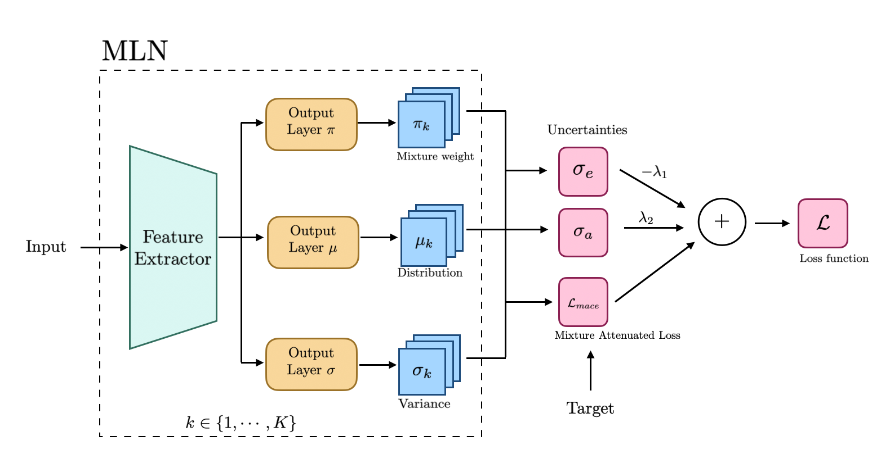
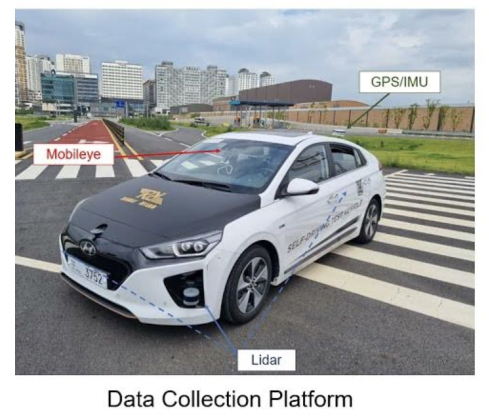
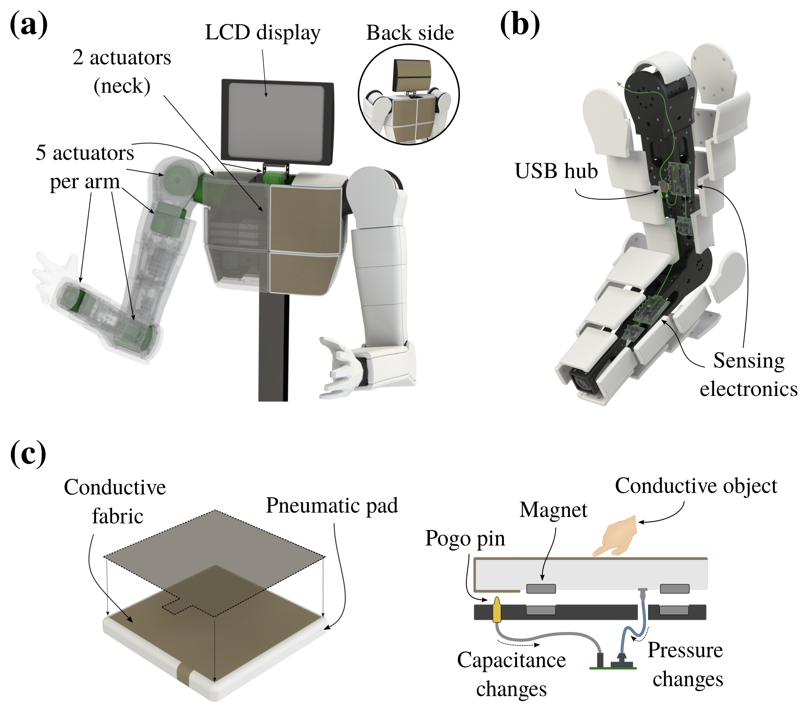
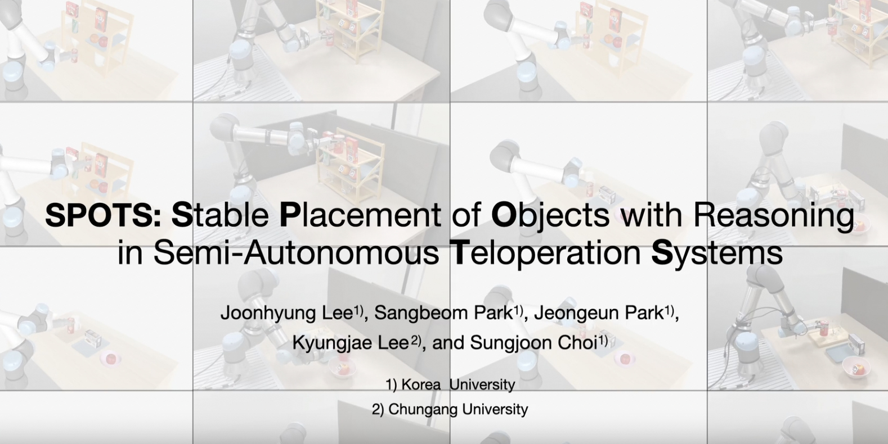
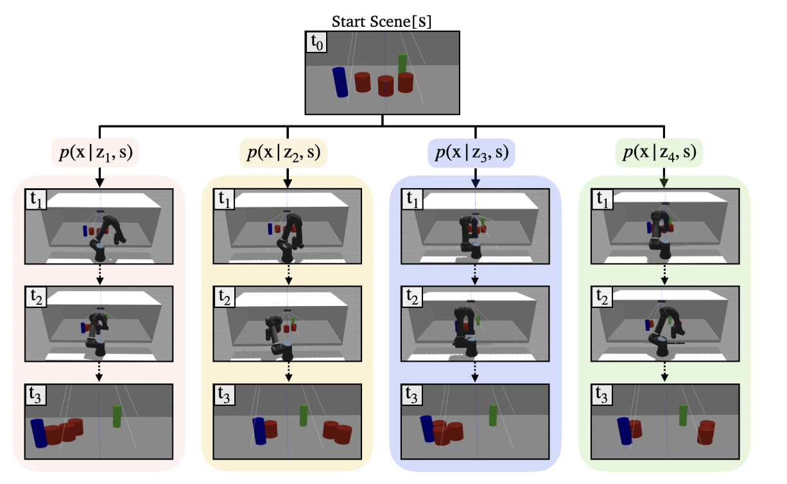
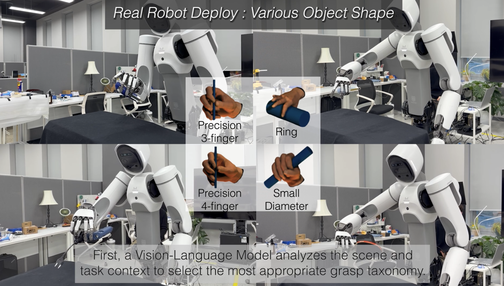

Publications
Browse all publications by year or research tag.
Efficient Learning (7)

Learning Transferable World-Action Models from Task-Paired Human Videos
WATCH pre-trains a world-action model on task-paired human videos with cross-video prediction: given one demonstration as reference, the model predicts the actions and future frames of another demonstration of the same task, learning interactions that transfer across scenes and demonstrators and boosting downstream robot imitation learning.
LaLa-World: Scaling Latent World Models with Natural Language Actions
LaLa-World uses natural language as a shared action interface to train latent world models across simulation, robot trajectories, images, and videos, enabling efficient planning and downstream policy learning.

Retrieve, Don't Retrain: Extending Vision-Language-Action Models to New Tasks at Test Time
ReCAP is a retrieval-augmented policy that adapts vision-language-action models to new tasks at deployment without retraining: the frozen policy conditions on retrieved trajectories at every control step, so new tasks are absorbed by indexing data rather than updating parameters.

SPARK: Simple Post-training for Adapting pRetrained Knowledge to Robot Control
A simple post-training method that adapts pretrained visual foundation models for robot control by combining dynamics-aware abstraction with knowledge preservation, yielding compact yet semantically meaningful state representations. SPARK consistently improves success rates and generalization across robotics benchmarks and transfers to real-world manipulation.

LEGO: Latent‑space Exploration for Geometry‑aware Optimization of Humanoid Kinematic Design
Using screw-theory-based joint axis representation and isometric manifold learning, we construct a compact, geometry-preserving latent space of robot designs in which optimization is tractable. We then solve design optimization in this latent space using gradient-free optimization.

Token Bottleneck: One Token to Remember Dynamics
ICLR 2025 7th Robot Learning Workshop: Towards Robots with Human-Level Abilities
ToBo uses extreme masked autoencoding to learn compact, temporally aware visual state embeddings that boost robotic manipulation and locomotion performance in both simulation and real-world.

Learning Robot Structure and Motion Embeddings using Graph Neural Networks
Using graph neural networks (GNN) to find compact, low-dimensional embeddings of a robot’s kinematic structure and pose data.
Safety and Robustness (6)

Sparse Feature Policy Unlearning Mitigates State Hallucination in Vision-Language-Action Models
SOUL identifies sparse features associated with state hallucination in vision-language-action models, where the policy acts as if an unrealized robot-object state had been achieved, and selectively unlearns them while retaining success-relevant features, reducing hallucinated failures and improving task success.

Pose Estimation of Transparent Objects via Depth Completion and Confidence-Guided Registration
VIUGIC is a framework for transparent-object pose estimation that combines depth completion with uncertainty-aware registration, using confidence scores to down-weight unreliable depth predictions near refractive boundaries.

Hierarchical Vision Language Action Model Using Success and Failure Demonstrations
We propose VINE, a dual-system framework that injects failure-aware reasoning into VLAs. System 1 executes grounded action chunks, while System 2 builds a tree of thought states and scores candidate subgoals using both success and failure data.

CLARA: Classifying and Disambiguating User Commands for Reliable Interactive Robotic Agents
International Conference of Robotics and Automation (ICRA), 2024
Introducing a method for interactive robotic agents using large language models (LLMs) to classify user commands as clear, ambiguous, or infeasible, enhancing reliability by leveraging uncertainty estimation, situational awareness, and user interaction for disambiguation.

Elucidating Robust Learning with Uncertainty-Aware Corruption Pattern Estimation
Uncertainty-aware robust learning

Towards Defensive Autonomous Driving: Collecting and Probing Driving Demonstrations of Mixed Qualities
R3 Driving Dataset, a novel collection of driving data categorizing abnormal behaviors to enhance OOD detection for autonomous driving.
Human-Robot Interaction (7)

Temporally Decoupled Touch-Responsive Humanoid Interaction with Interruptible Motion Execution
TRHI separates fast tactile responses from slower touch-type and visual context updates, enabling a humanoid to hold or redirect expressive motions during touch-based interaction through an interruptible, anchor-based motion executor.

A Unified Framework for Motion Reasoning and Generation in Human Interaction
MoLaM (Interactive Motion language model) integrates language and motion modalities to understand, generate, and control interactive motions in multi-turn conversations, addressing the scarcity of multi-turn interactive motion data with a synthetic dataset, INTER-MT2.

Towards Embedding Dynamic Personas in Interactive Robots: Masquerading Animated Social Kinematics (MASK)
International Conference of Robotics and Automation (ICRA), 2025
ICRA 2025 The 2nd Workshop on Nonverbal Cues for Human-Robot Cooperative Intelligence
Employing a persona-driven interactive framework to animate an anthropomorphic robotic system, enhancing audience engagement through non-verbal interactions

SPOTS: Stable Placement of Objects with Reasoning in Semi-Autonomous Teleoperation Systems
Introducing a teleoperation framework that enhances the 'place' task in robotics by combining simulation-driven stability verification with semantic reasoning from large language models.
CLARA: Classifying and Disambiguating User Commands for Reliable Interactive Robotic Agents
International Conference of Robotics and Automation (ICRA), 2024
Introducing a method for interactive robotic agents using large language models (LLMs) to classify user commands as clear, ambiguous, or infeasible, enhancing reliability by leveraging uncertainty estimation, situational awareness, and user interaction for disambiguation.

Text-based Human Search and Approach using a Robot Dog
A robotic system using textual descriptions for human search and approach, combining language models for identifying targets and a hybrid learning framework for generating human-friendly robotic motions

Semi-Autonomous Teleoperation via Learning Non-Prehensile Manipulation Skills
Semi-Autonomous Teleoperation framework for non-prehensile manipulation tasks.
Robot Foundation Model (9)
Learning Transferable World-Action Models from Task-Paired Human Videos
WATCH pre-trains a world-action model on task-paired human videos with cross-video prediction: given one demonstration as reference, the model predicts the actions and future frames of another demonstration of the same task, learning interactions that transfer across scenes and demonstrators and boosting downstream robot imitation learning.
LaLa-World: Scaling Latent World Models with Natural Language Actions
LaLa-World uses natural language as a shared action interface to train latent world models across simulation, robot trajectories, images, and videos, enabling efficient planning and downstream policy learning.
Sparse Feature Policy Unlearning Mitigates State Hallucination in Vision-Language-Action Models
SOUL identifies sparse features associated with state hallucination in vision-language-action models, where the policy acts as if an unrealized robot-object state had been achieved, and selectively unlearns them while retaining success-relevant features, reducing hallucinated failures and improving task success.
Retrieve, Don't Retrain: Extending Vision-Language-Action Models to New Tasks at Test Time
ReCAP is a retrieval-augmented policy that adapts vision-language-action models to new tasks at deployment without retraining: the frozen policy conditions on retrieved trajectories at every control step, so new tasks are absorbed by indexing data rather than updating parameters.
SPARK: Simple Post-training for Adapting pRetrained Knowledge to Robot Control
A simple post-training method that adapts pretrained visual foundation models for robot control by combining dynamics-aware abstraction with knowledge preservation, yielding compact yet semantically meaningful state representations. SPARK consistently improves success rates and generalization across robotics benchmarks and transfers to real-world manipulation.
Hierarchical Vision Language Action Model Using Success and Failure Demonstrations
We propose VINE, a dual-system framework that injects failure-aware reasoning into VLAs. System 1 executes grounded action chunks, while System 2 builds a tree of thought states and scores candidate subgoals using both success and failure data.
Token Bottleneck: One Token to Remember Dynamics
ICLR 2025 7th Robot Learning Workshop: Towards Robots with Human-Level Abilities
ToBo uses extreme masked autoencoding to learn compact, temporally aware visual state embeddings that boost robotic manipulation and locomotion performance in both simulation and real-world.
A Unified Framework for Motion Reasoning and Generation in Human Interaction
MoLaM (Interactive Motion language model) integrates language and motion modalities to understand, generate, and control interactive motions in multi-turn conversations, addressing the scarcity of multi-turn interactive motion data with a synthetic dataset, INTER-MT2.
Towards Embedding Dynamic Personas in Interactive Robots: Masquerading Animated Social Kinematics (MASK)
International Conference of Robotics and Automation (ICRA), 2025
ICRA 2025 The 2nd Workshop on Nonverbal Cues for Human-Robot Cooperative Intelligence
Employing a persona-driven interactive framework to animate an anthropomorphic robotic system, enhancing audience engagement through non-verbal interactions
Manipulation (5)

Learning Dexterous Grasping from Sparse Taxonomy Guidance
GRIT is a two-stage framework that learns dexterous grasping from sparse taxonomy guidance: it first predicts a taxonomy-based grasp specification from the scene and task context, and then generates continuous finger motions that preserve the intended grasp structure, enabling controllable grasp adjustment via high-level taxonomy selection.
Pose Estimation of Transparent Objects via Depth Completion and Confidence-Guided Registration
VIUGIC is a framework for transparent-object pose estimation that combines depth completion with uncertainty-aware registration, using confidence scores to down-weight unreliable depth predictions near refractive boundaries.
SPOTS: Stable Placement of Objects with Reasoning in Semi-Autonomous Teleoperation Systems
Introducing a teleoperation framework that enhances the 'place' task in robotics by combining simulation-driven stability verification with semantic reasoning from large language models.
Learning Robot Structure and Motion Embeddings using Graph Neural Networks
Using graph neural networks (GNN) to find compact, low-dimensional embeddings of a robot’s kinematic structure and pose data.
Semi-Autonomous Teleoperation via Learning Non-Prehensile Manipulation Skills
Semi-Autonomous Teleoperation framework for non-prehensile manipulation tasks.
Navigation (3)
Text-based Human Search and Approach using a Robot Dog
A robotic system using textual descriptions for human search and approach, combining language models for identifying targets and a hybrid learning framework for generating human-friendly robotic motions
Humanoids (3)
Temporally Decoupled Touch-Responsive Humanoid Interaction with Interruptible Motion Execution
TRHI separates fast tactile responses from slower touch-type and visual context updates, enabling a humanoid to hold or redirect expressive motions during touch-based interaction through an interruptible, anchor-based motion executor.
LEGO: Latent‑space Exploration for Geometry‑aware Optimization of Humanoid Kinematic Design
Using screw-theory-based joint axis representation and isometric manifold learning, we construct a compact, geometry-preserving latent space of robot designs in which optimization is tractable. We then solve design optimization in this latent space using gradient-free optimization.
Towards Embedding Dynamic Personas in Interactive Robots: Masquerading Animated Social Kinematics (MASK)
International Conference of Robotics and Automation (ICRA), 2025
ICRA 2025 The 2nd Workshop on Nonverbal Cues for Human-Robot Cooperative Intelligence
Employing a persona-driven interactive framework to animate an anthropomorphic robotic system, enhancing audience engagement through non-verbal interactions